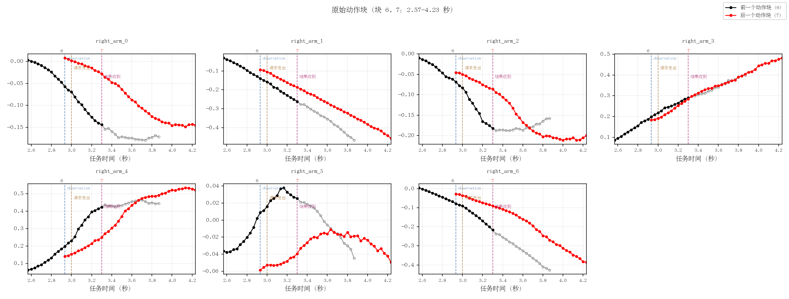
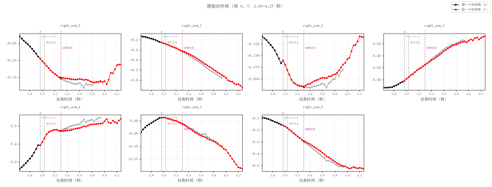
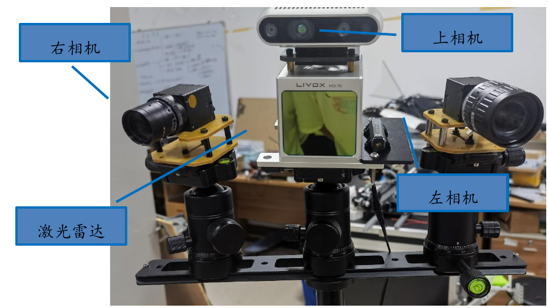
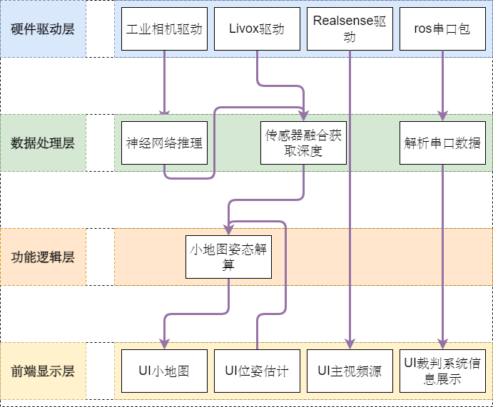
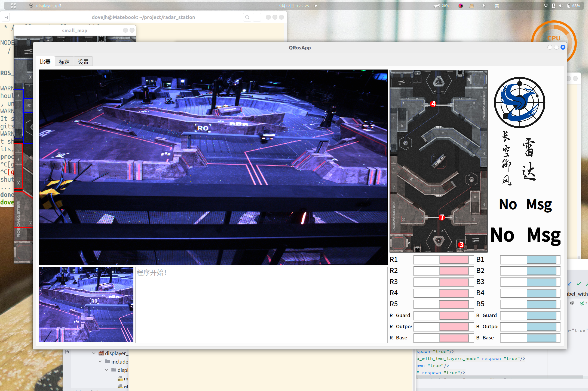

01 / 实习经历
人形机器人 VLA 推理优化
在 ROS 2 与 Isaac Sim 环境中完成数据采集和推理链路调试，针对模型推理周期与机器人控制周期不一致的问题， 实现异步推理及 RTC 实时块化优化。
动作块切换对比


个人信息
浙江大学 · 控制科学与工程直博生
01 / 实习经历
在 ROS 2 与 Isaac Sim 环境中完成数据采集和推理链路调试，针对模型推理周期与机器人控制周期不一致的问题， 实现异步推理及 RTC 实时块化优化。


02 / 项目经历
RoboMaster 赛场环境复杂，机器人之间存在遮挡。雷达站需要持续识别敌方机器人， 将定位结果投影到小地图，为操作手提供全局视野和战术信息。
项目成果 RoboMaster 全国一等奖、Livox 开源奖。



03 / 项目经历
面向自主设计的并联轮腿结构，完成整机运动学与动力学建模；基于五连杆等效模型建立 10 维状态空间模型， 设计 MPC 算法，并在 Simulink、ROS Webots 和实物平台完成验证。